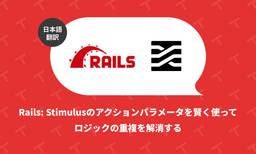

TechRacho
https://techracho.bpsinc.jp
TechRacho（テックラッチョ）は、BPSスタッフがおくるシステム開発＋αのアイデアマガジンです。Ruby on Railsネタ、EPUBの電子書籍ビューワに関連したAndroid/iOS開発ネタが多いです。社内の雰囲気がわかる記事もあるので興味をもってくださる方はぜひご覧ください。
フィード
AIにメンテを任せて、人間は理解に集中する。新時代のTIL（Today I Learned）活用法 1
1
TechRacho
🔗 TILは有用だが継続が難しい TILというものがあります。 「Today I Learned」の略で、その日学んだことを記録していくという勉強手法のことを指すそうです。 私はTILについて最近まで知りませんでした。 日々何かと疑問に思うことはあり調べることはよくありましたが、それだけで満足して特に記録などはしないことが大半でした。（業務で必要ならする程度） ただせっかく調べたならいつでも見返せるようにTILとして記録した方が良いだろうし、何ならGit管理した方が色々と便利だろうなと思います。 以下の記事ではTILとGit管理について触れられているので参考にしてください。 参考: Githubのリポジトリ「TI […]The post AIにメンテを任せて、人間は理解に集中する。新時代のTIL（Today I Learned）活用法 first appeared on TechRacho.
3日前

Ruby: Bundler で欲しい機能はまだ他にもある（翻訳） 5
TechRacho
概要 原著者の許諾を得て翻訳・公開いたします。 英語記事: The Missing Bundler Features | byroot’s blog 原文公開日: 2026年04月20日 原著者: byroot -- Railsコアコミッター、Rubyコミッターです 日本語タイトルは内容に即したものにしました。 Ruby: Bundlerで欲しい機能はまだ他にもある（翻訳） ここ数か月ほど、Bundlerを高速化する議論が盛り上がっていました。Bundlerを直接改良する方法や、別言語で再実装する方法の両方について議論されていました。しかし驚く人もいるかもしれませんが、私はBundlerの高速化にはあまりそそられ […]The post Ruby: Bundler で欲しい機能はまだ他にもある（翻訳） first appeared on TechRacho.
4日前

Rails アプリが「Rails-way」を卒業するとき（1）プロローグ（翻訳） 16
TechRacho
概要 原著者の許諾を得て翻訳・公開いたします。 英語記事: Farewell to Rails-way: Prologue 原文公開日: 2026年05月05日 原著者: Paweł Dąbrowski -- Arkencyのシニアスタッフエンジニアであり、『Rails on AWS』の著者です 日本語タイトルは内容に即したものにしました。 本シリーズ記事における"Rails-way"という用語は、著者による再解釈を含んでいることにご注意ください。 Railsアプリが「Rails-way」を卒業するとき（1）プロローグ（翻訳） 私がRuby on Railsを使い始めたのは2010年のことでした。PHP環境からR […]The post Rails アプリが「Rails-way」を卒業するとき（1）プロローグ（翻訳） first appeared on TechRacho.
5日前

Rails: Stimulus のアクションパラメータを賢く使ってロジックの重複を解消する（翻訳） 1
TechRacho
概要 元サイトの許諾を得て翻訳・公開いたします。 英語記事: Smarter Use of Stimulus' Action Parameters | Rails Designer 原文公開日: 2025年07月10日 原著者: Rails Designer -- Railsフロントエンド関連記事に加えて、ViewComponentとTailwind CSSを用いた美しいUIコンポーネントを販売しています 日本語タイトルは内容に即したものにしました。 Rails: Stimulusのアクションパラメータを賢く使ってロジックの重複を解消する（翻訳） 本記事は私の著作『JavaScript for Rails Dev […]The post Rails: Stimulus のアクションパラメータを賢く使ってロジックの重複を解消する（翻訳） first appeared on TechRacho.
6日前
メディア掲載のお知らせ
TechRacho
この度、当サイトの取り組みや掲載コンテンツについて、外部の有力なメディア様にご注目いただき、ご紹介（掲載）いただきました。 弊社の発信している情報が、他社様メディアを通じてより多くの方の課題解決にお役立ていただけていることを、編集部一同大変嬉しく思っております。 本記事では、当サイトをご紹介いただいたメディア様と、掲載されたコンテンツについて感謝の意を込めてご報告させていただきます。 🔗 株式会社Epace様 【中小企業向け】BtoBマーケティング施策20選！成功事例と費用対効果を徹底解説 | 株式会社Epace 同記事より 株式会社Epaceは、上場企業や大手コンサルファーム出身のメンバーが集まる総合マーケティ […]The post メディア掲載のお知らせ first appeared on TechRacho.
6日前
Rust のSIGTRAPバグを調べたら破壊的変更の取り消しが原因だった（翻訳） 2
TechRacho
概要 CC BY-NC-SA 4.0 International Deedに基づいて翻訳・公開いたします。 英語記事: Hitting a Reverted Breaking Change in Rust | Rails at Scale 原文公開日: 2026年04月20日 原著者: Alan Wu CC BY-NC-SA 4.0 Deed | 表示 - 非営利 - 継承 4.0 国際 | Creative Commons 日本語タイトルは内容に即したものにしました。 RustのSIGTRAPバグを調べたら破壊的変更の取り消しが原因だった（翻訳） きっかけは、Rust 1.85.0が一部のテストコードで思わぬS […]The post Rust のSIGTRAPバグを調べたら破壊的変更の取り消しが原因だった（翻訳） first appeared on TechRacho.
7日前

Rails: Arkencyが考える「2026年のRails Way」とは（翻訳）
TechRacho
概要 元サイトの許諾を得て翻訳・公開いたします。 英語記事: The Rails Way in 2026 | Arkency Blog 原文公開日: 2026年05月08日 原著者: Andrzej Krzywda 日本語タイトルは内容に即したものにしました。 processは原則として「処理」としました。 Rails: Arkencyが考える「2026年のRails Way」とは（翻訳） 本日行われた週に一度のArkency定例会議で、興味深い議論が持ち上がりました。「2026年のRails Way」をどう定義するかというトピックです。議論は多方面に広がりましたが、本記事で結果をまとめておきたいと思います。 私 […]The post Rails: Arkencyが考える「2026年のRails Way」とは（翻訳） first appeared on TechRacho.
10日前
Rubydex: 多くの Ruby ツールで使えるインデックス生成・静的分析エンジン（翻訳）
TechRacho
概要 CC BY-NC-SA 4.0 International Deedに基づいて翻訳・公開いたします。 英語記事: One engine, many tools — Introducing Rubydex | Rails at Scale 原文公開日: 2026年05月12日 原著者: Vinicius Stock CC BY-NC-SA 4.0 Deed | 表示 - 非営利 - 継承 4.0 国際 | Creative Commons 日本語タイトルは内容に即したものにしました。 Rubydex: 多くの Ruby ツールで使えるインデックス生成・静的分析エンジン（翻訳） 🔗 1つのエンジンで多くのツール […]The post Rubydex: 多くの Ruby ツールで使えるインデックス生成・静的分析エンジン（翻訳） first appeared on TechRacho.
11日前
2026年版「クジラに乗ったRuby」Evil Martians流 Docker + Ruby/Rails 開発環境構築（LLM対応）
TechRacho
概要 原著者の許諾を得て翻訳・公開いたします。 英語記事: Ruby on Whales: Dockerizing Ruby and Rails development — Martian Chronicles, Evil Martians’ team blog 原文更新日: 2026/02/23 著者: Vladimir Dementyev（首席バックエンドエンジニア）、Travis Turner（技術ライター） サイト: Evil Martians -- ニューヨークやロシアを中心に拠点を構えるRuby on Rails開発会社です。良質のブログ記事を多数公開し、多くのgemのスポンサーでもあります。 更新情 […]The post 2026年版「クジラに乗ったRuby」Evil Martians流 Docker + Ruby/Rails 開発環境構築（LLM対応） first appeared on TechRacho.
12日前
Ruby 4.0.5セキュリティ修正がリリースされました
TechRacho
Ruby 4.0.5セキュリティ修正がリリースされました。 We released Ruby 4.0.5 and published security advisory for CVE-2026-46727. If you use Ruby 4.0.0~4.0.4, we recommend updating your Ruby version to 4.0.5.https://t.co/oo0P2OWOqJ — k0kubun (@k0kubun) May 20, 2026 リリースノート: Ruby 4.0.5 Released | Ruby GitHubリリースノート: Release 4.0. […]The post Ruby 4.0.5セキュリティ修正がリリースされました first appeared on TechRacho.
12日前